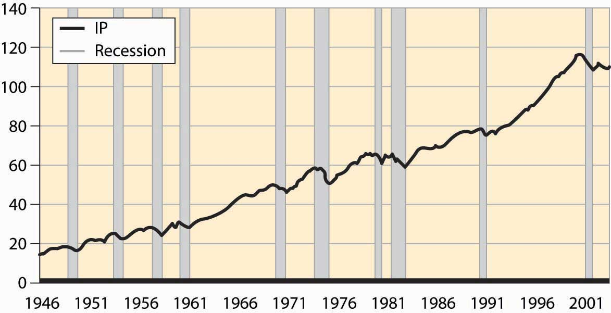
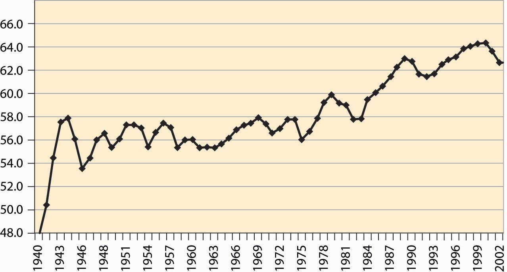
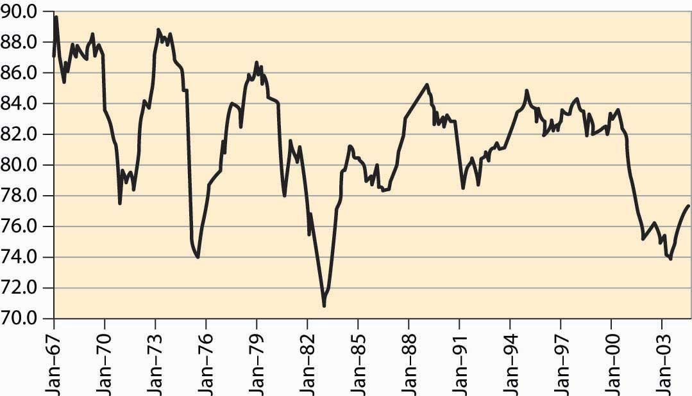

The U.S. economy has recessionsPeriods marked by a drop in gross domestic output., a term that refers to a period marked by a drop in gross domestic output. Recessions are officially called by the National Bureau of Economic Research, which keeps statistics on the economy and engages in various kinds of economic research. Generally, a recession is called whenever output drops for one-half of a year.
Figure 4.53 Postwar industrial production and recessions
Figure 4.53 "Postwar industrial production and recessions" shows the overall industrial production of the United States since World War II. Drops in output are clearly noticeable. The official recessions are also marked. There are three booms that lasted about a decade; these are the longest booms in U.S. history and much longer than booms ordinarily last. Prior to World War II, a normal boom lasted 2½ years and the longest boom was 4 years. Recessions have historically lasted for 1½ to 2 years, a pattern that continues. Indeed, the average recession since World War II has been shorter than the average recession prior to that time.
These fluctuations in output are known as the business cycleRandom fluctuations in output., which is not an exact periodic cycle but instead a random cycle.
Figure 4.54 Percentage of the population employed
An important aspect of the business cycle is that many economic variables move together, or covaryTo move together.. Some economic variables vary less with the business cycle than others. Investment varies very strongly with the business cycle, while overall employment varies weakly. Interest rates, inflation, stock prices, unemployment, and many other variables also vary systematically over the business cycle. Recessions are clearly visible in the percentage of the population employed, as illustrated in Figure 4.54 "Percentage of the population employed"
Some economic variables are much more variable than others. For example, investment, durable goods purchases, and utilization of production capacity vary more dramatically over the business cycle than consumption and employment. Figure 4.55 "Industrial factory capacity utilization" shows the percentage of industrial capacity utilized to produce manufactured goods. This series is more volatile than production itself and responds more strongly to economic conditions.
Figure 4.55 Industrial factory capacity utilization
Source: FRED.
Most of the field of macroeconomics is devoted to understanding the determinants of growth and of fluctuations, but further consideration of this important topic is beyond the scope of a microeconomics text.